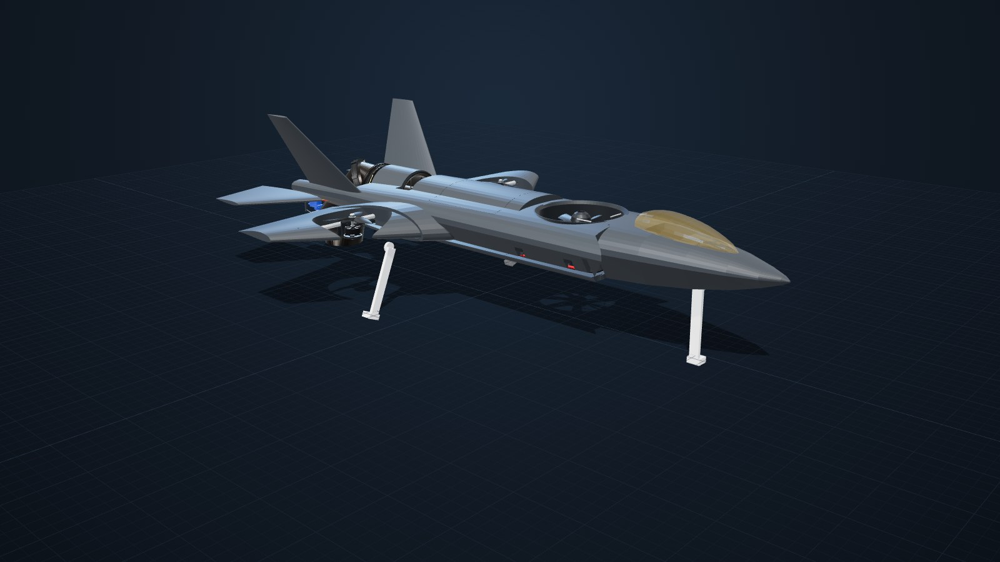
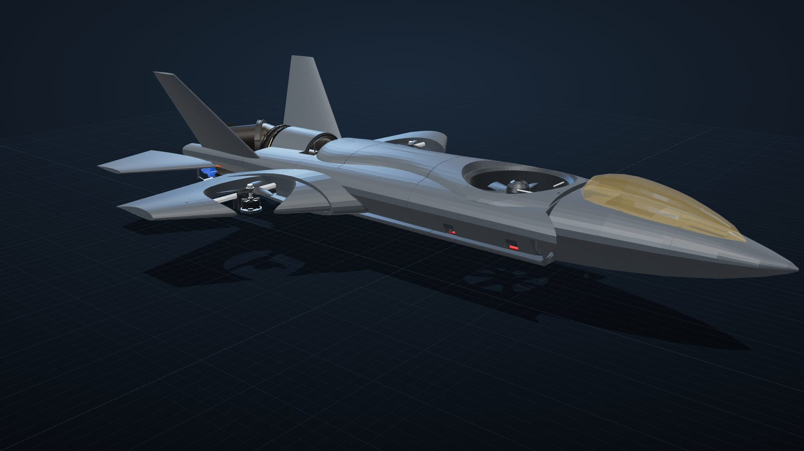
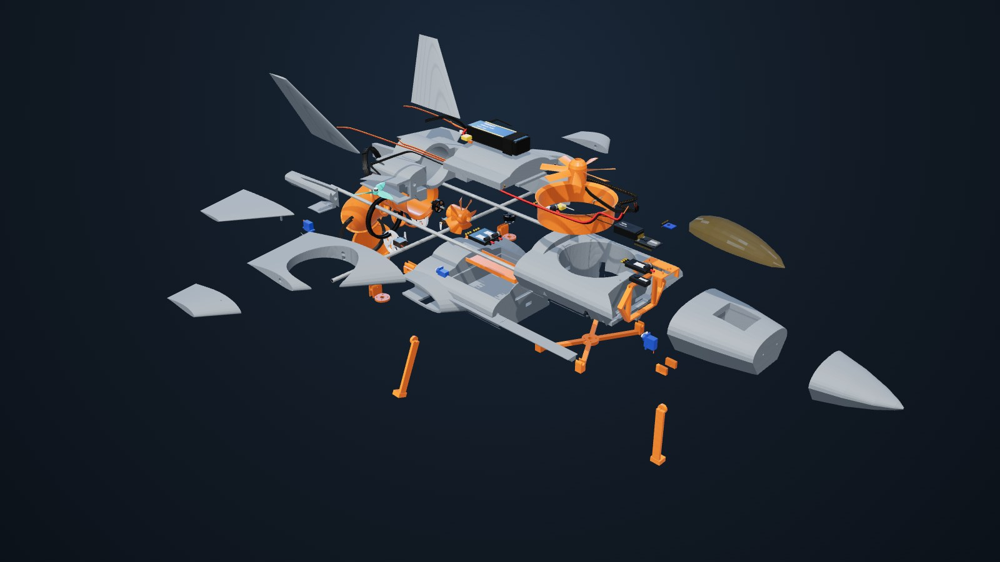

Three fans and a swivel nozzle lift it. A wing carries it. Every part is drawn in code, checked in simulation, and printed next.
| Thruster | Share of weight | Effort |
|---|---|---|
| Lift fan, 140 mm, behind the cockpit | 801 g | 60% of max |
| Roll pair, 5 in props buried in the wings | 981 g | 60% of max |
| Main fan through the swivel nozzle | 200 g | 25% of max |


| Loop | Weight | Hardest fan | Stability | Drawn? |
|---|---|---|---|---|
| 1 · first sizing | 1,892 g | 74% | −23.6% | Yes (before the fix) |
| 2 · layout applied | 1,938 g | 78% | +7.2% | Yes |
| 3 · hover margin | 1,717 g* | 60% | +5.5% | No, paper study |
| 4 · shape, legs, wiring | 1,981 g | 59.6% | +6.5% | Yes, current |
The first model was a snap-together F-35B shape on two tubes, sized around motors, speed controllers and a battery left over from an earlier VTOL build. It looked right and was badly balanced.
Aerodynamic analysis put the balance point far behind where lift acts: −23.6% stability, an aircraft that flips nose-up. The fix was to move the wing and roll motors 75 mm aft and the lift fan 80 mm forward.
Lesson. No battery position alone gives both a stable flight and a balanced hover. The wing itself has to move.
Applying loop 1 to the real geometry failed twice. The nose was too narrow for the larger fan, so the body grew 70 mm. The longer flat body lifted, and stability went negative again. A bigger tail did almost nothing, because it sits in the wing's wake. Moving the electronics into the nose worked.
Lesson. Check every paper answer on the drawn part. Two of three proposals did not survive.
The fans worked too hard in a hover. A stronger lift-fan motor, roll motors moved in front of the spar, a smaller pack and 119 g of weight savings brought the hardest fan to 60%.
The fuselage became one blended shell with a flush nozzle. Three legs fold into the belly. Every wire runs in two moulded channels under flush covers, with a connector at each end. Drawing it honestly cost weight: real wiring is 132 g, not the 45 g assumed.
Lesson. Record the weight as it is, not as hoped. Every target is still met, with nothing to spare.
The design leans on two thrust figures that are still models: the printed 80 mm fan and the 140 mm lift fan. Both go on a thrust stand before any airframe part is printed.
Eric Maglio of Lofted Aero has flown a VTOL F-35B through full transitions. His build is the benchmark this project learns from. His project page.
| Lofted Aero F-35B | This model | |
|---|---|---|
| Status | Flies, with full transitions | Designed and simulated |
| Weight | About 2.7 kg | 1,970 g |
| Lift | Two 70 mm ducted fans, wing-tip roll motors | 140 mm lift fan, 80 mm main fan, roll motors buried in the wings |
| Nozzle | Three-bearing swivel, three servos and a custom controller board | Three-bearing swivel, a gearmotor on each bearing and its own board, as his |
| Flight control | ArduPilot, modified for this layout | Own mixer on an ESP32 today; ArduPilot path planned |
| Airframe | Foam with printed key parts | Fully printed, snap-together |
| Battery | 6-cell, 4,000 mAh | 4-cell, 2,700 mAh |
| Hover time | About 2.5 min | 3.4 min (simulated) |
Reference figures as stated in a published video of his build.